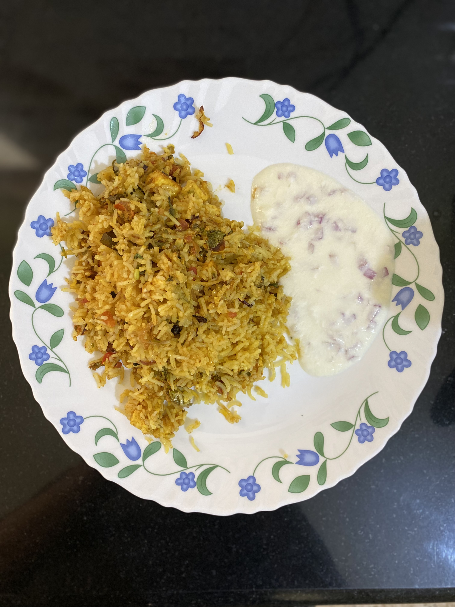

Paneer Biryani
Aromatic and flavorful, Paneer Biryani is a delightful Indian rice dish with fragrant basmati rice, paneer, and spices.
Discover delicious vegetarian recipes and explore the world of plant-based goodness.
Aromatic and flavorful, Paneer Biryani is a delightful Indian rice dish with fragrant basmati rice, paneer, and spices.
Indulge in the rich flavors of kadai paneer, a popular North Indian dish with paneer, bell peppers, and aromatic spices.
Satisfy your sweet tooth with gajar halva, a delicious carrot-based dessert infused with cardamom and garnished with nuts.
Enjoy a healthy moong salad with sprouted moong beans, fresh veggies, and a zesty dressing. A nutritious and tasty option.